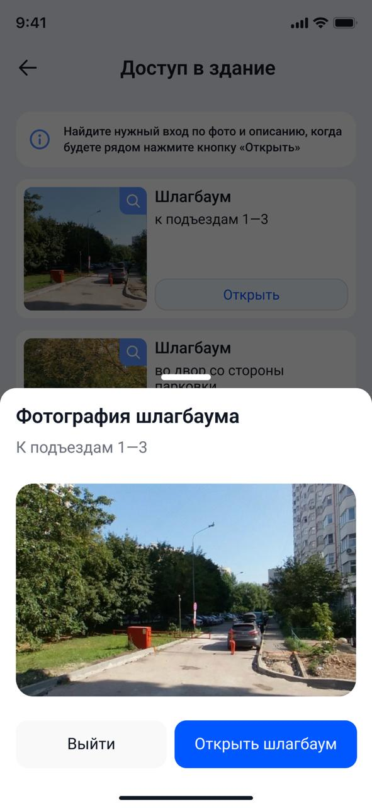
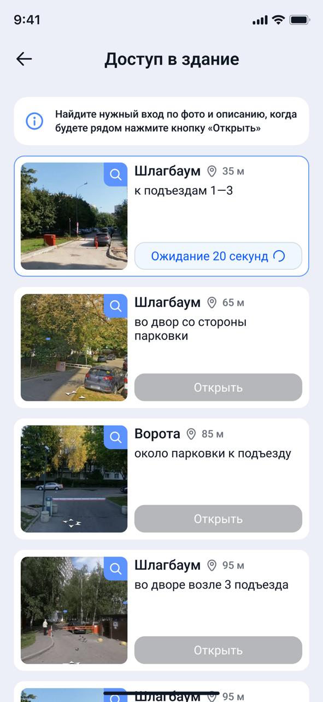
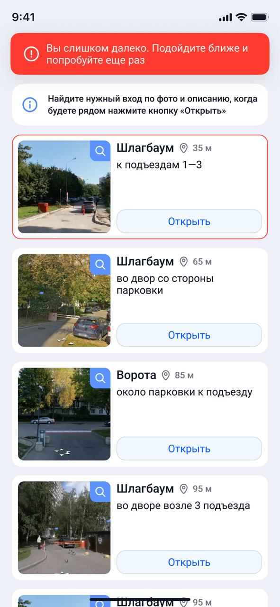
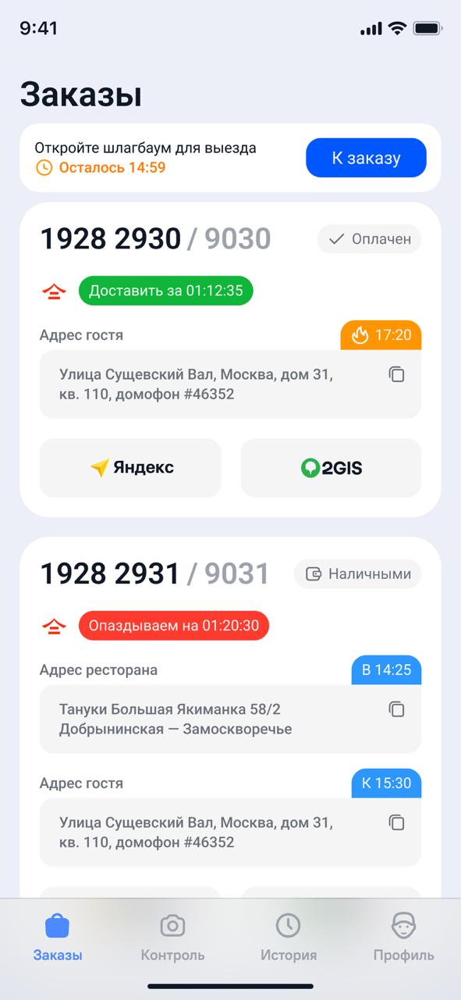
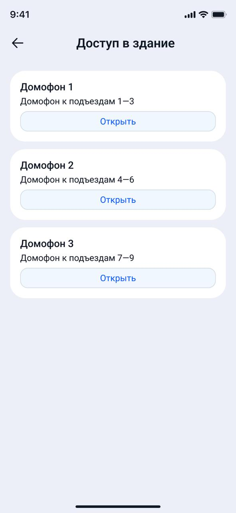
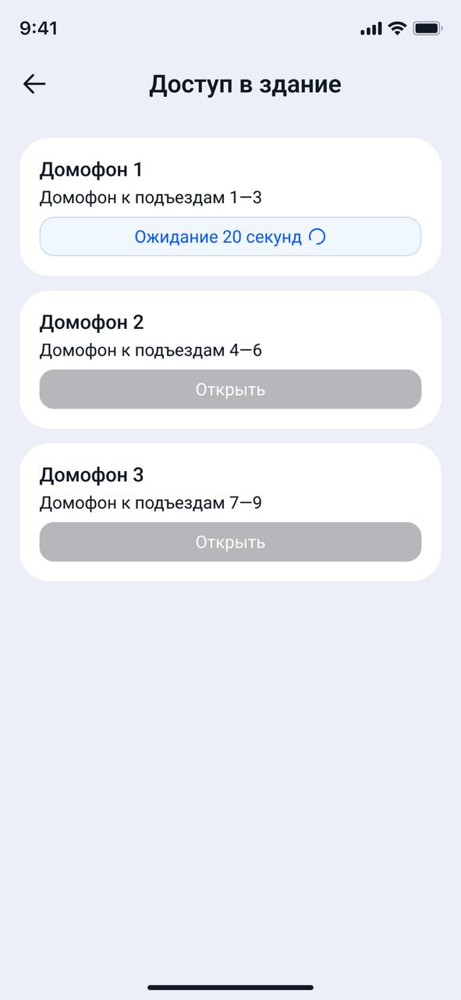
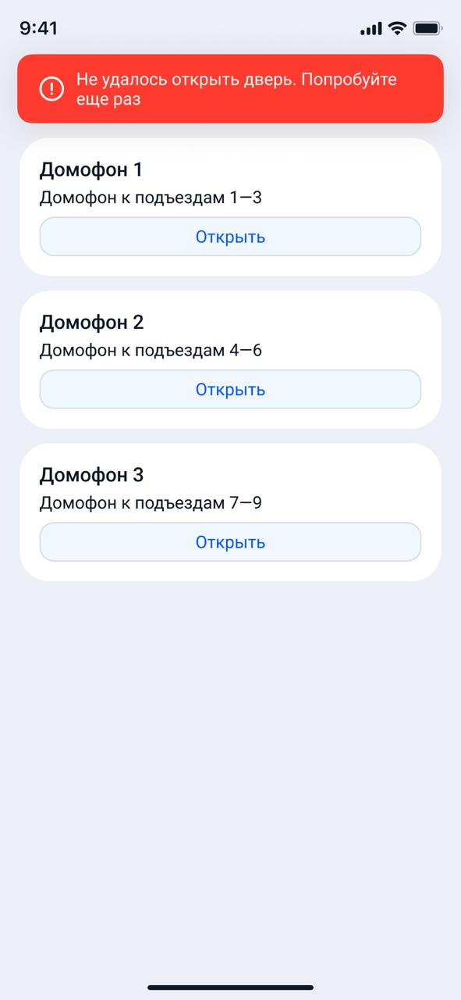
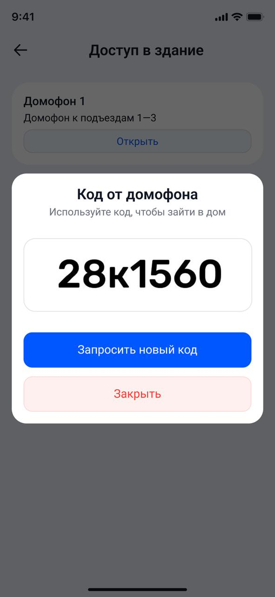
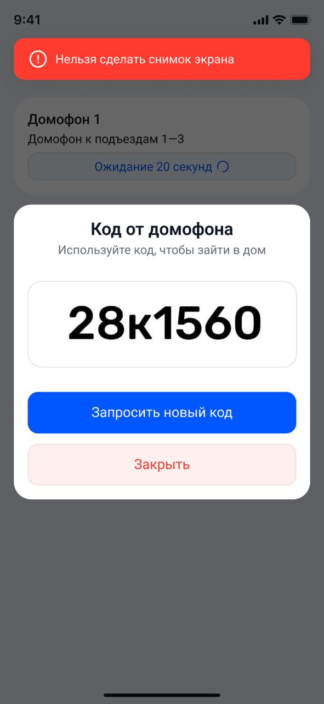

Шлагбаумы & домофоны
Инструкция для курьеров «Мчимыч» — быстрый доступ к доставке
Содержание
Общее описание
В приложении «Мчимыч» доступен функционал автоматического открытия шлагбаумов и домофонов, который позволяет курьерам быстрее и удобнее получать доступ на территории доставки.
- Использовать исключительно личную учетную запись, в которой указан актуальный рабочий номер телефона курьера. Использование аккаунтов без номера телефона или с номером, принадлежащим другому курьеру либо компании, не допускается.
- Указывать государственный номер транспортного средства строго в соответствии с фактически используемым ТС. В ряде случаев доступ оформляется автоматически именно по номеру автомобиля. Если указанные данные не совпадают с фактическими, система не сможет открыть шлагбаум.
- Выбор транспортного средства осуществляется при начале смены.
Открытие шлагбаумов
Для открытия шлагбаума необходимо перейти в карточку заказа. Внутри карточки будет доступна кнопка «Открыть».

Кнопка «Открыть» в карточке заказа — первый шаг для доступа к шлагбауму.
После нажатия на кнопку откроется список шлагбаумов, доступных для открытия. Для удобства курьера каждый объект сопровождается фотографией — это помогает быстро определить нужный шлагбаум.

Список шлагбаумов с фотографиями для быстрого выбора нужного объекта.
Если нажать на иконку лупы , можно посмотреть подробную информацию о конкретном шлагбауме.
Для открытия необходимо нажать кнопку «Открыть» рядом с нужным объектом.

Кнопка «Открыть» рядом с выбранным шлагбаумом.
После этого система отправит команду на открытие, а на экране появится информация о примерном времени ожидания. В большинстве случаев открытие занимает около 20 секунд.

Информация о времени ожидания (~20 секунд). Кнопки временно блокируются.
Возможные ситуации:
- курьер находится слишком далеко от шлагбаума;
- произошла системная ошибка.

Сообщение об ошибке: дальность или системный сбой.
- зафиксировать текст ошибки (сделать скриншот)
- сообщить менеджеру доставки (МД)
- менеджер доставки (МД) пишет в SD
- доставку выполнить через связь с гостем
Во время выполнения команды открытия кнопки будут временно заблокированы. После завершения ожидания (примерно через 20 секунд) они снова станут активными.
Выезд также доступен по запросу из приложения. Функционал открытия для выезда работает аналогично: кнопка «Открыть» остаётся активной, а рядом отображается таймер времени её доступности. Запросить открытие на выезд можно так же, как и на въезд — через карточку заказа или через список шлагбаумов.

Кнопка «Открыть» с таймером доступности (выезд с территории). Запрос на выезд отправляется через приложение.
Открытие домофонов
В приложении поддерживаются два типа домофонов:
- домофоны с автоматическим открытием двери через приложение;
- домофоны с ручным вводом кода, который генерируется системой.
Домофоны с автоматическим открытием
Для открытия двери необходимо нажать кнопку «Открыть» в карточке заказа — аналогично открытию шлагбаума.

Кнопка «Открыть» для домофона в карточке заказа.
После этого на экране появится список подъездов. Курьеру необходимо выбрать нужный подъезд и нажать кнопку «Открыть». Процесс открытия обычно занимает около 20 секунд. На это время остальные кнопки открытия будут временно заблокированы.

Список подъездов и временная блокировка кнопок на 20 секунд.
После успешной обработки запроса дверь откроется автоматически. Если открыть дверь не удалось, система отобразит сообщение с причиной ошибки.

Ошибка открытия домофона: причина на экране.
Домофоны с кодом доступа
Для получения кода также необходимо нажать кнопку «Открыть». После запроса система сгенерирует уникальный код, который будет отображен на экране. Этот код необходимо вручную ввести на панели домофона.

Сгенерированный уникальный код доступа на экране.

Ошибка при попытке сделать скриншот кода — система блокирует.
Сводка по нештатным ситуациям
- зафиксировать текст ошибки (скриншот)
- сообщить менеджеру доставки (МД)
- менеджер доставки (МД) пишет в SD
- доставку выполнить через связь с гостем
После ошибки или таймаута (≈20 сек) кнопки открытия снова становятся активными.
Видео-инструкция
Наглядная демонстрация работы с функционалом открытия шлагбаумов и домофонов в приложении «Мчимыч».
Проверьте себя
Ответьте на 5 вопросов по инструкции. После выбора варианта вы увидите правильный ответ.